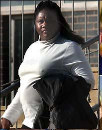
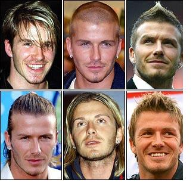

Chương Mười

háng 11, 1999, Manchester United thắng Palmeiras (Brazil) 1 – 0, lần đầu tiên giành Cúp Liên Lục Địa. Mọi năm, như thế coi như xong, CLB vô địch Liên Lục Địa được coi như nhà vô địch thế giới. Đến năm 2000, ông FIFA “lắm chuyện” đẻ thêm ra Cúp Vô Địch Thế Giới Các CLB, mời tất cả các nhà vô địch châu lục, không chỉ Âu – Mỹ, mà cả Á – Phi…tham dự. Vậy là đầu tân niên, United phải bỏ cả Cúp FA, sang Brazil dự giải đấu mới của FIFA.
Chuyến đi năm đó chẳng khác nào đi nghỉ. Trong khi các cường địch tại Anh phải căng sức ra đá ở giải ngoại hạng, Quỷ Đỏ chơi cầm chừng cho qua chuyện trên đất Brazil, thời gian còn lại chủ yếu nghỉ dưỡng và tắm nắng. United bị loại ngay vòng đầu, Beckham thậm chí lãnh thẻ đỏ trận gặp Necaxa của Mexico, song điều quan trọng là đội trở lại Anh mà không mất chút sức nào. Vừa về nước, David và đồng đội thắng liền ba trận, đoạt ngôi đầu bảng từ tay Arsenal.
Không may, từ cuối tháng một, David gặp phải một số vấn đề cá nhân, đầu tiên là vụ bị… quấy rối tình dục. Chẳng là có một nhân vật bí ẩn nào đó cứ đặt quà trước nhà David. Nếu quà thường không nói làm chi, đằng này toàn đồ lót phụ nữ và những bức thư gợi dục. David báo cảnh sát, rồi cảnh sát tóm gọn thủ phạm: Một bà béo 36 tuổi, nặng 90 cân, tên Chinyelu Obue. Bị hỏi vì sao quấy rối người ta, Obue thật tình: “Tôi lúc nào cũng nặng khoảng 80 – 90 ký, so với Victoria thì khác xa. Nhưng mà tôi cũng gợi tình theo cách của tôi, và cũng có khối người hâm mộ đấy. Tôi biết David chẳng đời nào để ý tới tôi, nhưng tôi vẫn muốn ngủ với ảnh. Thư tôi viết cho ảnh kể ra thì khiêu dâm thiệt, có điều tôi không ác ý gì đâu. Tôi chỉ muốn nhìn thấy ảnh cười thôi mà.”

Chinyelu Obue (Ảnh: Thesun)
Vụ này có thể cười, song vụ thứ nhì thì không. Đầu tháng hai, David bỏ một buổi tập, ở nhà trông Brooklyn bị ốm. Hôm sau, khi anh tới sân, liền bị Sir Alex Ferguson gọi ra, đuổi xuống tập cùng đội dự bị.
Bị đuổi ngay trước mặt đồng đội, David nóng mặt, vùng vằng quay đi, định bụng sẽ thay đồ, rồi lên xe lái thẳng về nhà. Song đi được vài bước, anh suy nghĩ lại: Thứ bảy này có trận đấu rồi, đừng làm căng thẳng tình hình thêm, phải cư xử chuyên nghiệp chứ.
Nghĩ đoạn, David quay đầu, trở vào phòng thể lực, tự tập một mình. Tập được một lúc, thấy thủ quân Roy Keane đi ngang, anh hỏi Keane mình nên làm gì.
-Còn làm gì nữa? Đi gặp sếp mà nói chuyện đi!
Nghe lời Keane, David gõ cửa phòng Sir Alex:
-Thầy à, không phải con muốn bỏ tập đâu, nhưng gia đình con là ưu tiên trước nhất. Con trai con ốm, con phải ở nhà chăm cháu.
Sir Alex cau mày, nhìn xuống tờ báo trên bàn, trên đó in hình Victoria đi dự tiệc đêm:
-Thế là thế nào? Anh ngồi nhà chăm con, trong khi con vợ anh ra ngoài đú đởn?
-Thầy đừng nói vợ con như vậy – David cắn môi – Nếu con ăn nói vô lễ với cô thì thầy sẽ nghĩ gì?
Kết cục ra sao không cần phải nói: Sir Alex loại Beckham khỏi đội hình gặp Leeds vào cuối tuần. Buồn bực, David gọi cho ông Ted, chẳng ngờ cha và thầy lại đứng cùng một phe.
-Tại sao bố lúc nào cũng ủng hộ thầy Fergie? – David nổi cáu – Tại sao thế?
-Tại vì ông ấy đúng chứ làm sao nữa. Nếu ông ấy sai thì bố đã ủng hộ con rồi![1]
Được cái Sir Alex nóng tính mà không bao giờ giận dai. Không lâu sau, ông cùng trợ lý Steve McClaren, Beckham và Gary Neville cùng ngồi lại, nói chuyện hòa giải.
-Thôi quên đi nhé – Sir xoa tay – Bình thường như cũ nhé?
David nhẹ cả người. Sir đối với anh như người cha thứ hai. Cha mẹ lúc sai, lúc đúng, nhưng ai mà chẳng thương con. David hiểu rõ: Sir có làm bất cứ điều gì cũng đều vì lợi ích của CLB. Đối đầu cùng Sir là điều anh không muốn chút nào.
Không ngờ vừa nhẹ lòng buổi sáng, đến chiều, David đã lại hoảng hồn khi nghe thầy gọi điện:
-Anh đang ở chỗ quái nào đấy?
-Dạ, gì ạ?
-Đang ở đâu?
-Dạ, trong xe.
-Đừng có láo nhé. Anh đang ở Barcelona, có phải không?
-Barcelona nào – David bật cười – Con đang ở bãi đậu xe Trafford Centre đây mà.
-Có người báo ta biết anh ở sân bay Barcelona[2].
Không biết làm thế nào, David đành miêu tả quang cảnh bãi đậu xe cho thầy nghe, và kể rõ ràng vừa rồi anh vào những tiệm nào, mua sắm những gì. Đầu bên kia im lặng một lát mới nghe tiếng Sir: Thế thì thôi, chào nhé.
Kể chuyện trên để thấy Sir Alex ngày càng bất an trước nhịp sống showbiz của vợ chồng Beckham. Nhưng từ đấy đến hết mùa, không có thêm vấn đề nào nữa. United dễ dàng bảo vệ chức vô địch, bỏ xa Arsenal đến 18 điểm. Tiếc rằng đội không bảo vệ được ngôi vua châu Âu. Ở vòng tứ kết Cúp C1 gặp Real Madrid, Quỷ Đỏ xuất sắc hòa 0 – 0 ngay tại Bernabeu, song để thua 2 – 3 trên sân nhà Old Trafford. Trận này, David ghi một trong những bàn thắng đẹp nhất sự nghiệp, với pha dứt điểm gọn gàng, sau khi dùng kỹ thuật cá nhân lừa qua ba cầu thủ đối phương.
Như thông lệ những năm chẵn, sau mùa giải giành cho CLB, sẽ đến cuộc tranh tài giữa các ĐTQG. Năm 2000, đó là Euro diễn ra ở Hà Lan và Bỉ. Tuyển Anh gây thất vọng lớn tại giải, xách valy ra về ngay sau vòng đấu bảng, đá 3 trận chỉ thắng được Đức 1 – 0, còn lại thua Bồ Đào Nha (BĐN) và Romania với cùng tỷ số 2 – 3. Vậy nhưng lần này không ai trách Beckham, bởi cá nhân anh đã thể hiện phong độ tuyệt vời: Trong 5 bàn thắng Tam Sư ghi được, có đến 3 bàn do David kiến tạo. Trên khán đài, các fan liên tục đồng ca “David Beckham! Chỉ có một David Beckham!” Ngay cả khi David chĩa ngón tay giữa về phía CĐV sau trận gặp BĐN, hành động ấy cũng được bỏ qua.
Phỉ báng CĐV nhà là một hành vi khó tha thứ. Còn nhớ hồi World Cup 1994, cũng vì vụ “ngón tay thối”, Stefan Effenberg đã bị đuổi khỏi đội tuyển Đức. Sở dĩ David không gặp rắc rối là vì người ta hiểu được anh không nhằm vào người hâm mộ nói chung, mà chỉ biểu thị thái độ với một nhóm nhỏ hooligan đang hung hăng chửi rủa trên khán đài:
-ĐM Beckham! Vợ mày là con đĩ!
-Ước gì thằng con mày bị ung thư!
Nếu riêng mình bị lăng mạ, David chịu được. Cầu thủ chuyên nghiệp phải quen với những việc như thế. Song một khi những kẻ vô lại lôi cả Victoria và Brooklyn vào, anh không thể kiềm chế. May là HLV Kevin Keegan cũng nghe thấy tất cả. Trong buổi họp báo sau trận đấu, ông đứng ra giải thích mọi chuyện và bênh vực David. Một khi đã hiểu rõ nguyên do, đa số mọi người đều thông cảm với Beckham. Bảo vệ được học trò, nhưng sau một Euro thảm hại, Keegan suy sụp tinh thần. Ông chỉ trụ lại thêm được vài tháng, rồi quyết định từ chức sau trận thua Đức 0 – 1 tại vòng loại World Cup 2002…
Một sáng tháng 11, năm 2000, David đang say giấc, bỗng tiếng chuông điện thoại reo vang. Mắt nhắm mắt mở, anh nhấc máy, làu bàu:
-A lô, ai đấy?
-Chào David, Peter Taylor đây.
Peter Taylor chính là HLV tạm quyền tuyển Anh, trong lúc liên đoàn bóng đá chưa bổ nhiệm HLV chính thức. Vừa nghe Taylor xưng danh, David tỉnh ngủ hẳn:
-Dạ vâng, có chuyện gì đấy ạ?
-Xin lỗi vì gọi sớm thế này, nhưng tôi đang lên danh sách đội tuyển cho trận giao hữu gặp Italy. Lần này tôi gọi nhiều cầu thủ trẻ, có những người chưa từng lên tuyển bao giờ. Tôi nghĩ đã đến lúc trao cho cậu băng thủ quân. Cậu hoàn toàn đủ năng lực để đeo chiếc băng này, chẳng có gì phải bàn cãi. Nói riêng cho cậu biết như vậy, mai mốt tôi sẽ thông báo chính thức sau.
Nghe xong, David phải ngồi yên suốt năm phút để định thần. Thật đó chăng, hay chỉ là giấc mơ? Mình đeo băng thủ quân ĐTQG? Sung sướng và tự hào biết bao! Anh chộp lấy điện thoại, gọi cho vợ và cha mẹ. Chẳng bao lâu, cả đội Manchester United đều biết tin. Khi David đến sân tập, đồng đội ai cũng đùa, gọi anh là đội trưởng.
Trận Anh – Ý trên sân Delle Alpi kết thúc với tỷ số 1 – 0 nghiêng về chủ nhà. Thất bại trong một trận giao hữu chẳng có gì là thảm họa, điều quan trọng là khi HLV người Thụy Điển Sven Goran Eriksson chính thức lên nắm quyền dẫn dắt tuyển Anh, ông quyết định tiếp tục tin dùng Beckham trong vai trò đội trưởng.
“Cậu vẫn là thủ quân”, Eriksson nói, “Tôi tin tưởng cậu sẽ là một thủ quân lớn, làm nên tấm gương cho đồng đội nhìn vào. Nếu có ai đó nghi ngờ năng lực cậu, thì nhiệm vụ của cậu là chứng minh cho họ thấy họ đã sai.”
Cùng việc trở thành “sư tử đầu đàn”, năm 2000 còn ghi nhận một cột mốc khác trong cuộc đời David. Anh cho xuất bản cuốn tự truyện thứ hai: My World. Sách vừa in ra đã trở thành best-seller. Trong buổi ký tặng sách ở London, 8 000 fan hâm mộ chen nhau mua sạch không còn một cuốn, trong khi hồi ký của Sir Alex Ferguson bày bên cạnh chỉ bán được…500 bản.

Một vài kiểu tóc của David Beckham (Ảnh: Prlog)
Chú thích:
[1] Fan hâm mộ phần nhiều lại đứng về phía David. Năm 2001, anh được bình chọn là Ông Bố Hoàn Hảo Nhất Nước Anh, đứng trên thủ tướng Tony Blair, danh ca Bob Geldof, và diễn viên kỳ cựu Michael Douglas.
[2] Về hệ thống “thám báo” của Sir Alex Ferguson, xem Nguyễn Minh (2012), Sir Alex Ferguson – Chân Dung Một Huyền Thoại.